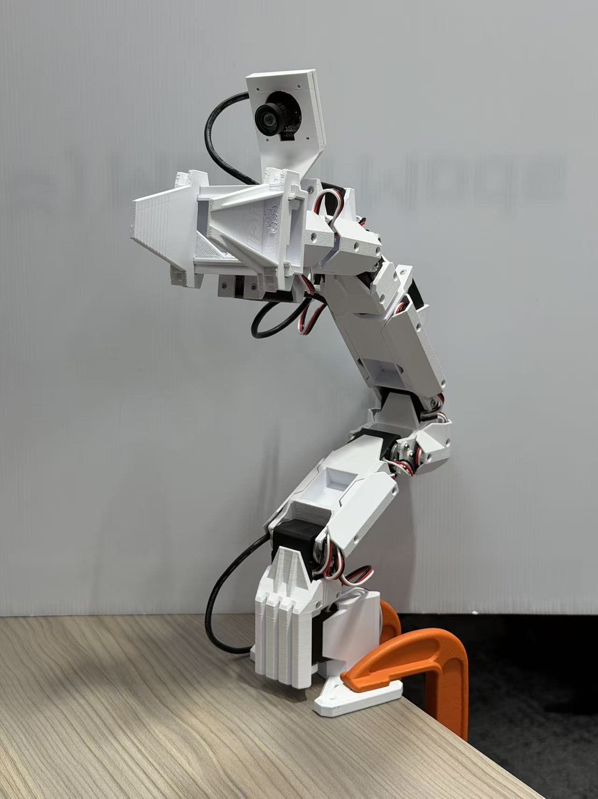
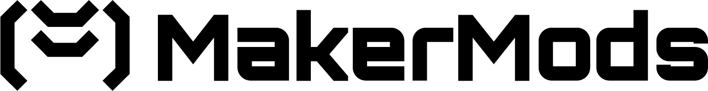
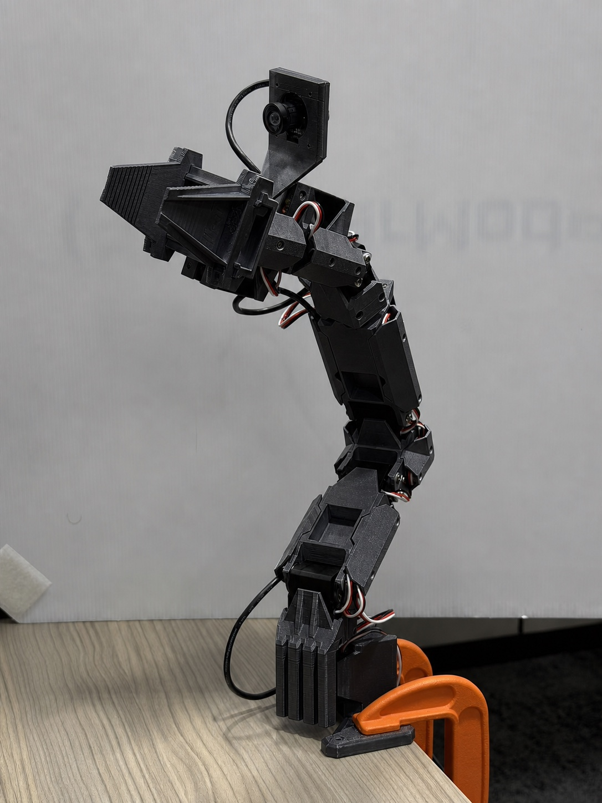
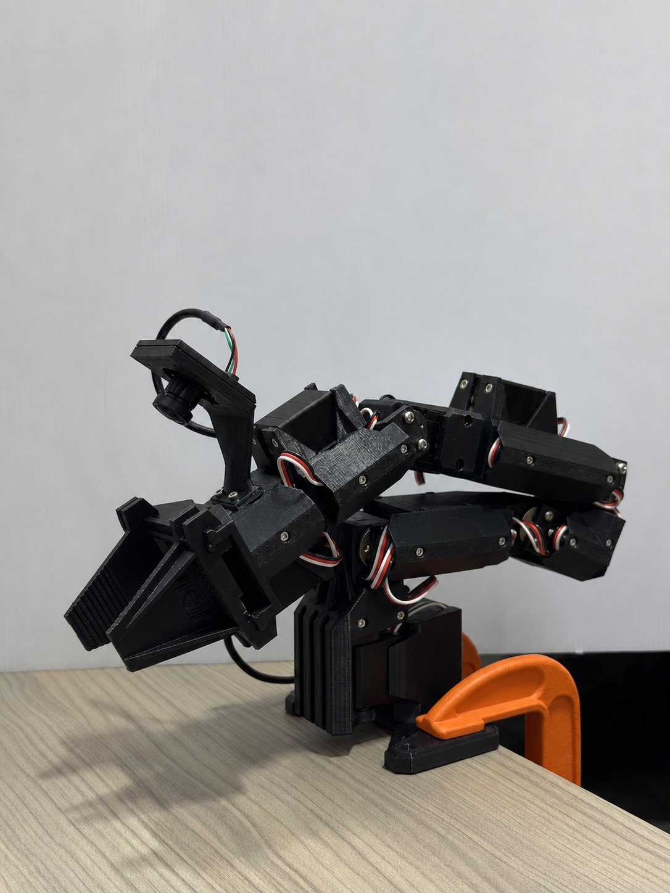
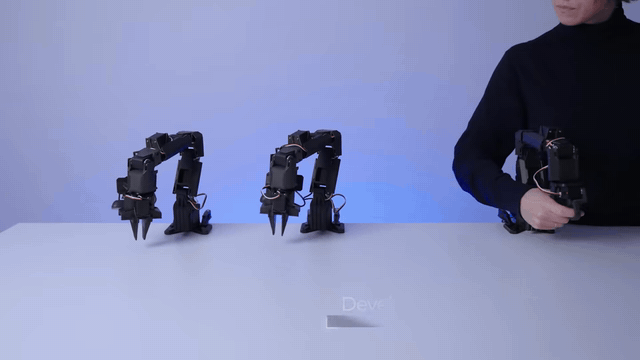
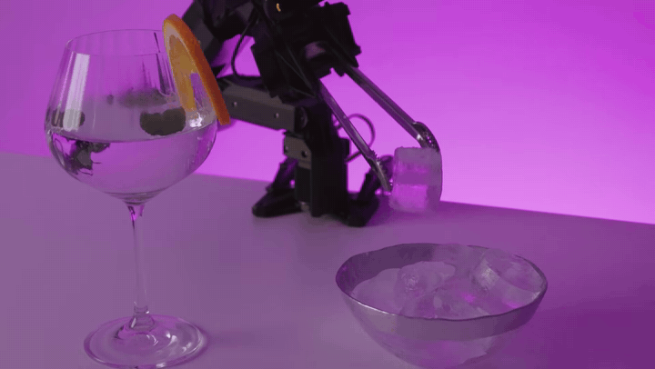
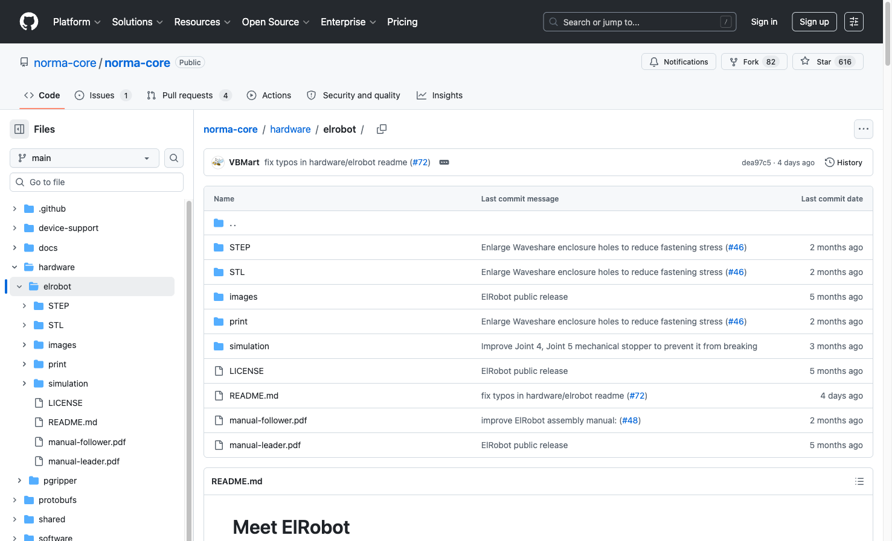

A fully assembled leader + follower teleoperation pair for imitation-learning research. Skip ~30 hours of printing, sourcing 16 servos, and wiring. Move the leader, the follower mirrors, and you're collecting data out of the box.
ElRobot is normally a ~30-hour DIY build. We print, assemble, wire, calibrate, and test every pair, so your first session is research, not soldering.


One more joint than the SO-101's six, a fuller teleoperation workspace for manipulation research, at ~800 g per arm.
The leader runs low-voltage 7.4 V servos that move with minimal resistance, so demonstrations feel natural and precise.
16 × Feetech STS3215 serial-bus servos across the pair. No proprietary hardware, swap any joint with an off-the-shelf part.
Printed, wired, calibrated, and tested by MakerMods, a proven build with 10 units already delivered.
Record demonstrations by hand: guide the back-drivable leader and the follower reproduces every motion while both cameras capture the scene, the standard pipeline for imitation learning.

Both arms arrive paired and calibrated. Plug both into your laptop over USB, power them up, and the follower shadows the leader, no assembly, no servo ID flashing.

Two USB cameras are included, one arm-mounted, one for the table view, so every demonstration is recorded from the viewpoints imitation-learning policies train on.
Everything to run leader-follower teleoperation and record demonstrations, the day it lands on your bench. Bring your own laptop.
Ships fully assembled and paired. Clamp both bases to your bench, connect power and USB, and you're recording demonstrations within minutes.
ElRobot is NormaCore's open hardware design. STL, STEP, Bambu / Orca print profiles, simulation files, and both assembly manuals are public, so you can print spares, repair any part, or mod the arm freely.
